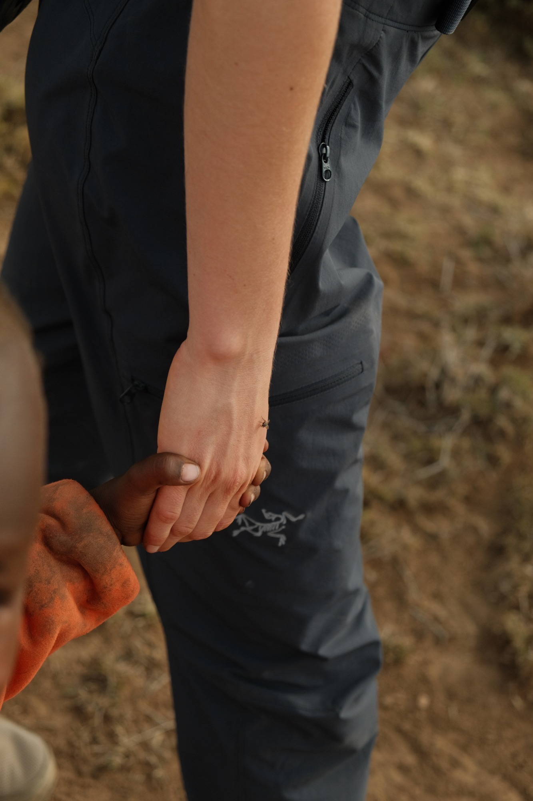

Homestay in Maji Moto
Narok County, Kenya (Winter 2023)
Journal Entry - January 24th
"note: Maji Moto in Kiswahili means "Hot Water". Two hours away from the Maasai Mara Reserve, the Maji Moto landscape already looks very different from the grasslands and open bushlands we witness during safaris. The land is dry, the cows are skinny. The whistle of wind through bushes imitates the sound of rain, but in reality, this land and its people haven’t seen or heard rain in a long time. In the middle of this harsh environment, like a green oasis, the waters of the hot spring give rise to tall trees that seem out of place in this landscape. The water also brings people and animals together. This hub is a place for bathing, laundry, cattle drinking, and water fetching. Motorcycles and donkeys gather around the stream waiting to be loaded. The rusty and leaking water pump on top of the hill syncs its squeaking with the wind. The nighttime in Maji Moto is a striking contrast to the arid days. The emptiness of a cloudless, shining sky is filled by the sound of strong winds approaching from afar. Now that the land has cooled down, the peaceful silence is occasionally disturbed by hyenas’ laughs."
January 27th
"As we entered the manyatta, my flight response was triggered by the smoke, the flies, and the lack of light. But I stayed, with eyes tearing up from the smoke and a sense of panic invading me. I have rarely felt so uncomfortable physically, but I was soon put at ease with a warm welcome and a cup of tea. That evening and the next morning, we discussed the differences and similarities of our lives with our host, the neighbors, and the kids. We “helped” with various chores like cooking, dishwashing, milking the goats, and fetching water."
